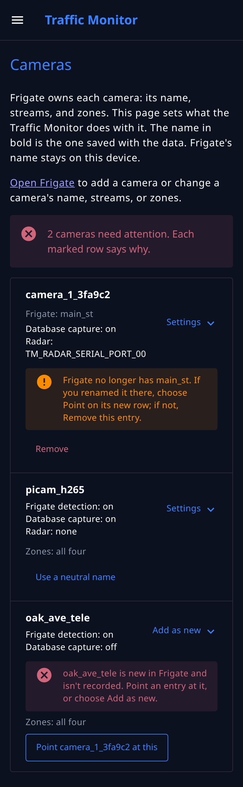
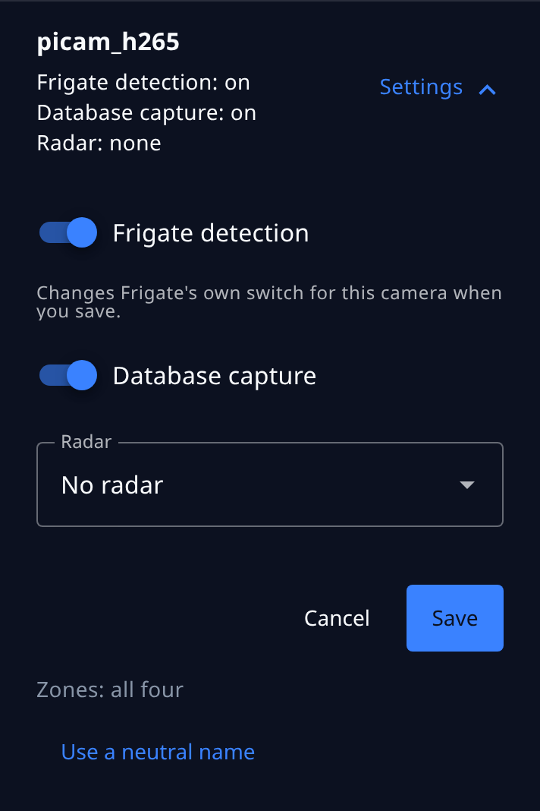
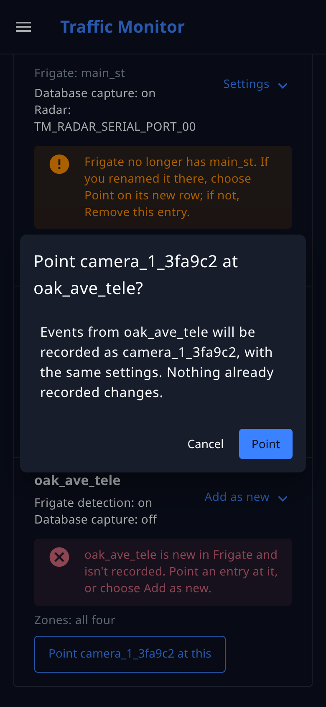

Cameras¶
Keep the Traffic Monitor's camera settings in step with Frigate's cameras, choose each camera's radar and recording, point a camera at its new name after a rename in Frigate, and see which name is saved and shared.
The control app's Cameras page connects each camera in Frigate to its settings in the Traffic Monitor: whether its events are recorded, which radar gives it speeds, and whether its events go to Plate Recognizer. It also keeps the two in step after you rename or add a camera in Frigate. Only the administrator sees the page.
A camera that was set up by the installer and never renamed works without it. Use the page when you rename a camera in Frigate, add one, pair a camera with a different radar, or want the camera's name kept out of the data the device saves and shares.
Two names for each camera¶
Each camera has two names:
- Frigate's name is the one in Frigate's configuration, such as
oak_ave_wide. Frigate uses it for the camera's streams, zones, and recordings, and for Frigate+. It can say where the camera is: an operator may name a camera after its street. It stays on the device. - The name in bold on the Cameras page is the camera's entry in
config.yml. It's the name saved with every event and the name the device shares: in the database, in the MQTT messagestm/eventandtm/events, in what a ThingsBoard server receives, and in what Plate Recognizer receives.
For a new camera, the page makes the second name for you: camera_ and a number, then six random characters from 0 to 9 and a to f, such as camera_1_3fa9c2. The number tells two cameras apart when you read the page. The random part keeps the name from being used twice on a device, so records from two different cameras never share a name. You can't type one yourself, because a typed name can hold a street again.
A device that has only picam_h265, as the installer sets it up, keeps working with no change: when an entry doesn't say which camera it is, it's the Frigate camera with the same name. picam_h265 doesn't say where the device is, so you can leave it. To switch a camera with a name of your own to a neutral one, see Use a neutral name.
The Cameras page¶
Cameras is in the control app's menu, after Detection. At the top, the page says that Frigate owns each camera's name, streams, and zones, and links to Frigate for adding a camera or changing them. Then comes one row for each entry in config.yml, followed by one for each Frigate camera that no entry is paired with. Each row opens, one at a time, to show the camera's settings inside it. A Frigate camera that is turned off there and that no entry is paired with isn't listed: it sends no events. Turn it on in Frigate, and it appears.

An entry's row shows its name in bold, and Frigate's name beside it when the two differ. Under them are its settings and what Frigate has:
- Frigate detection: whether Frigate detects objects on the camera now. A camera turned off in Frigate detects nothing, so it reads off.
- Database capture: whether the Traffic Monitor saves the camera's events in its database and sends them on. An event is recorded only when both are on.
- Radar, and, when the Plate Recognizer add-on is installed, Plates.
- Zones: all four, or Missing in Frigate and the zones the flows expect that the camera lacks, or Turned off in Frigate and the ones that are there but switched off. Frigate can turn a zone off in its configuration or from its live view, and an object never enters a zone that is off, so it counts as missing for the Traffic Monitor.
- Off in Frigate, when the camera is in Frigate's configuration but turned off there.
A Frigate camera that no entry is paired with shows its Frigate detection, and Database capture: off.
What needs attention¶
The page marks each problem the Status page's camera checks report, on the camera it's about, in the same colors: red for a problem, amber for a warning. Above the list, a line says how many cameras need attention. Each marked row has a box for each problem that says what's wrong and what to do on this page:
- Red: a camera is new in Frigate and isn't recorded while Frigate detects objects on it (point an entry at it, or add it), or another entry already records this Frigate camera (remove this one).
- Amber: Frigate no longer has the camera (point the entry at its new name, or remove it); the camera is turned off in Frigate, Frigate's detection is off, or Database capture is off, so its events aren't recorded; zones are missing or turned off, with a link, Edit its zones in Frigate, that opens Frigate's masks and zones settings at that camera; or the camera's radar isn't turned on in
config.yml.
A row with no box is in step. A new Frigate camera whose Frigate detection is off has no box either: nothing is detected, so nothing is dropped. You can still point an entry at it or add it. The page and the checks come from the same comparison, so they always agree.
When Frigate isn't answering, or has stopped itself in safe mode with no cameras, the page says so and can't compare. The settings stay editable, and the other buttons wait until Frigate answers.
Change a camera's settings¶
Choose Settings on a camera's row. The row opens to its settings. Change them, and choose Save; Cancel closes the row without changing anything.

| Setting | What it does |
|---|---|
| Frigate detection | Frigate's own detection switch for this camera, the same one as in Frigate's live view. It changes when you save, without restarting Frigate, and Frigate keeps it after a restart. Off, Frigate stops detecting objects on the camera, so there are no events to record; it keeps streaming, and recording video if you set it to. Shown only while Frigate answers and the camera is on there. |
| Database capture | Off, the Traffic Monitor drops this camera's events: nothing is saved in the database or sent on. Frigate keeps detecting either way. |
| Radar | The radar that supplies this camera's speeds. The camera's direction needs an enabled radar too, whether it comes from the zones' order or from the radar. No radar records the camera's events with no speed and no direction. One radar can serve several cameras. |
| Send plates to Plate Recognizer | Shown only when the add-on is installed. See Plate Recognizer. |
The drop-down lists the radars the device was installed with, each with its state:
- off in config.yml: the radar's entry has
enabled: false, so it reads nothing. - port closed: Node-RED hasn't opened the radar's serial port, for example because the radar was plugged in after the install. A radar that is off in
config.ymlshows both marks. See First-time setup. - not set up in config.yml: the radar has no entry under
sensors.radars, so it can't be chosen. Pairing a camera with it would record no speeds. - missing: the camera's current radar isn't one of the device's radars. Choose another, or No radar.
Radar settings themselves, such as turning a radar off, stay in config.yml. Which way a sensor faces is set on the Location page.
After renaming a camera in Frigate¶
When you rename a camera in Frigate, the Traffic Monitor doesn't know the new name belongs to the same camera, and records nothing from it until you say so.
- In Frigate's configuration editor, rename the camera and choose Save & Restart. Frigate uses the new name only after it restarts, so Save alone changes nothing yet.
- Open the Cameras page. The old entry reads Frigate no longer has the old name, and the new name has its own row, new in Frigate and isn't recorded. If Frigate's detection is off for the camera, the new row has no box, because nothing is being dropped, but it still offers Point. If the old entry's Database capture is off too, it has no box either, because nothing was being recorded from it, and the new row still offers Point.
- On the new row, choose Point
<entry>at this, and confirm.

The entry keeps its name and settings, so the camera's records carry on under the same name, in the same deployment, with nothing changed in the database. If two cameras were renamed together, each new row offers a button for each entry whose camera is gone. To choose the right pair, look at the entries' rows: each shows Frigate's old name for its camera and its radar. An entry whose camera is only turned Off in Frigate isn't offered, because that camera still exists.
Until you point the entry at the new name, the Status page's Cameras in config.yml check is a problem. While Frigate's detection is off for the camera, it's a warning instead, about the old entry, whose camera is gone. If the entry's Database capture is off as well, the check passes, because nothing is being dropped. Pointing the entry at the new name doesn't turn Database capture on; do that in its settings if you want the camera recorded.
Add a camera¶
A Frigate camera that no entry is paired with isn't recorded. On its row, choose Add as new. The row opens to the new entry's settings, with Database capture on, No radar, and plates off. Choose the radar, and Add. The page gives the entry its name.
Use a neutral name¶
An entry whose name isn't of the form camera_<number>_<six characters> has Use a neutral name on its row. Choose it to switch the camera to a name the page makes, such as camera_2_81d0e4. The entry keeps its settings and its place in config.yml, and remembers the old name as Frigate's name, so the pairing doesn't change.
Records already saved keep the old name. They can't be renamed here, because rewriting a database of several gigabytes on a microSD card takes a long time. The dashboards' charts start again under the new name, and Node-RED ends the camera's deployment under the old name and starts one under the new one, at the same place and facing the same way. The confirmation says so before it does anything. A server that receives the device's data sees the old sensor end and a new one start.
Remove an entry¶
An entry whose Frigate camera is gone, because you deleted the camera or renamed it and pointed no entry at the new name, has Remove. Choose it and confirm. The entry's settings are removed from config.yml, and Node-RED ends the camera's deployment. Records already saved are kept. The same button removes an entry that repeats another entry's Frigate camera.
What still carries Frigate's name¶
The Traffic Monitor keeps Frigate's name out of what it saves and shares. These places are Frigate's own, or hold the device's settings as they are, and still carry the name:
- Frigate's own database, and its recordings and snapshots. Frigate keeps events under its own camera names.
- Frigate's
frigate/eventsmessages on the device's MQTT broker. Anything subscribed to the broker sees them. Frigate publishes them, not the Traffic Monitor. - Frigate+. The name identifies the camera for the scene conditions and annotations you submit.
- The Backup button. With ThingsBoard connected, the Backup & Restore section of the legacy dashboard uploads Frigate's whole configuration, camera names included, when you press it. The copy of
config.ymlthat goes to ThingsBoard leaves out each entry'sfrigate_camerasetting. - Records saved before a switch. A device whose entry was named by hand has saved that name with its records, and keeps it there after you use a neutral name.
The Status page shows Frigate's camera names to anyone who is logged in, as Frigate does. The diagnostics file replaces them before you send it to someone; that section lists its limits.
To change the entries by hand, see sensors.cameras.